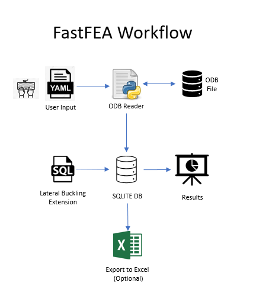

FastFEA User Guide
This is the userguide for using FastFEA package to complement the abaqus FEA. The objective of this software package is to automate the the FEA workflow for pipeline engineering.
The general architecture of the software is highly automated and flexible which allows user to modify yml and sql files to suit the use cases.
{kind=link}
Features
Field output extraction from any odb file.
Extracts multiple field outputs from multiple steps/frames/sets in one go.
Fast! Runs on the command line. No need to open odb file and check for viewer license.
All parameters are defined in a single input (yml) file.
Saves data in Excel file for further processing.
Generates sqlite database file for easy viewing and plotting. Highly efficient compared to Excel.
Element, Node and History outputs are supported.
In this release only post-processing module has been developed. The future releases will incrementally roll out the other modules.
- Date
11-10-2022
- Version
0.0.4
- Author
Abhishek Mamgain
- Contact